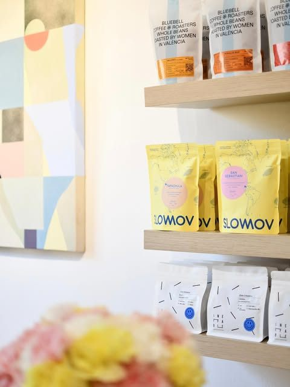
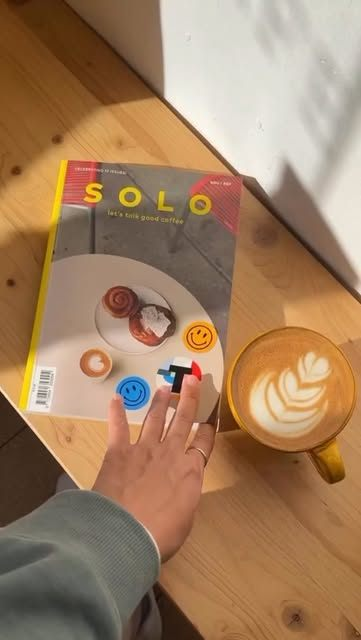
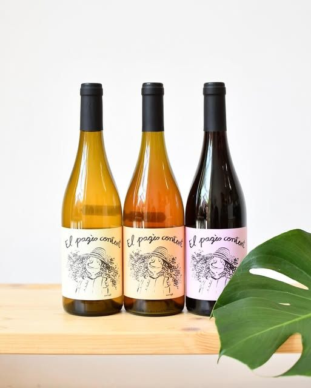
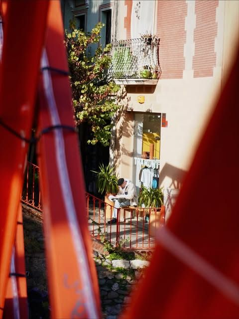
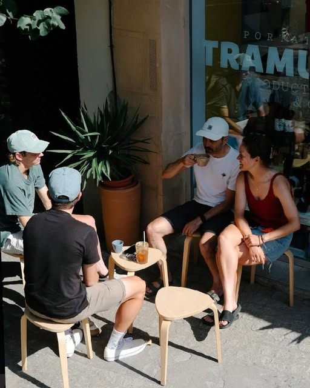
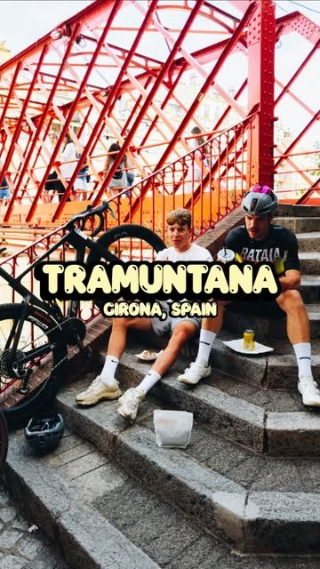
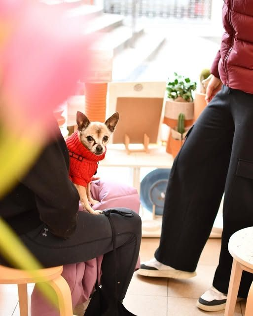

Tostadores
Café tostado por nosotros, en bolsas de colores que puedes llevarte a casa.

Mueve el ratón: sopla la tramuntana
Portat per la tramuntana
Café tostado por nosotros, en bolsas de colores que puedes llevarte a casa.

Espresso y cafés con leche con latte art, en la barra o en la terraza.

Una selección de vinos naturales para descubrir con calma.

Nos encontrarás junto a la escalera roja de la calle Hortes: terraza al sol, plantas y un buen café en la mano.



